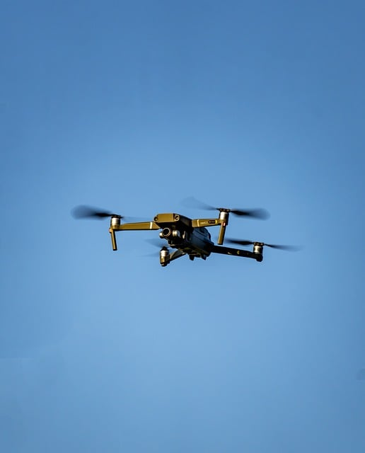

Dalam upaya meningkatkan produktivitas dan keberlanjutan sektor pertanian, Indonesia sedang mengalami revolusi teknologi yang signifikan. Pemerintah dan pelaku industri pertanian kini mengadopsi berbagai teknologi terbaru yang menjanjikan efisiensi lebih tinggi dan dampak lingkungan yang lebih rendah.
 Salah satu inovasi utama adalah penggunaan drone untuk pemantauan tanaman dan aplikasi pestisida. Teknologi ini memungkinkan petani untuk memantau kesehatan tanaman secara real-time dan mengaplikasikan pestisida secara presisi, mengurangi kebutuhan bahan kimia dan meminimalisir dampak negatif terhadap lingkungan. Menurut data dari Kementerian Pertanian, penggunaan drone telah meningkatkan hasil panen hingga 20% dalam uji coba di beberapa daerah.
Selain itu, sistem irigasi pintar yang menggunakan sensor kelembaban tanah juga mulai diterapkan secara luas. Sistem ini secara otomatis menyesuaikan aliran air berdasarkan kebutuhan tanaman, yang tidak hanya menghemat konsumsi air tetapi juga mengurangi biaya operasional. Di daerah-daerah yang kerap mengalami kekeringan, teknologi ini telah terbukti meningkatkan efisiensi penggunaan air hingga 30%.Berbasis AI untuk analisis data tanah dan cuaca. Aplikasi ini memberikan rekomendasi yang akurat tentang jenis pupuk dan teknik penanaman yang paling sesuai untuk kondisi lokal, membantu petani membuat keputusan yang lebih informasional dan meningkatkan hasil panen.
Menurut Direktur Jenderal Pertanian, Dr. Maria Santosa, “Teknologi merupakan kunci untuk masa depan pertanian Indonesia. Dengan mengintegrasikan teknologi modern, kami berharap dapat meningkatkan produktivitas pertanian, mengurangi dampak lingkungan, dan memberikan keuntungan yang lebih besar kepada petani.”
Dalam beberapa tahun terakhir, sektor pertanian Indonesia juga menyaksikan peningkatan dalam adopsi pertanian vertikal dan hidroponik, terutama di daerah urban. Ini memungkinkan produksi pangan yang lebih berkelanjutan dengan memanfaatkan ruang yang terbatas dan mengurangi ketergantungan pada pasokan dari daerah lain.
Para ahli meyakini bahwa dengan terus mengadopsi dan mengembangkan teknologi baru, Indonesia tidak hanya akan mampu memenuhi kebutuhan pangan domestik yang terus meningkat tetapi juga meningkatkan daya saing di pasar global.